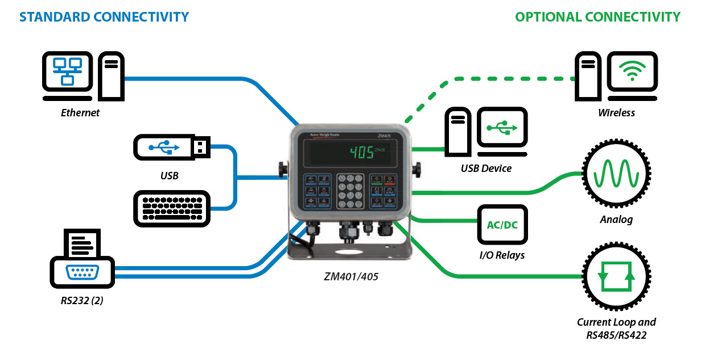

The ZM400 series of indicators offers multi-connectivity,
ensuring compatibility and
communication between old and new peripheral
technologies. An Ethernet port which supports
client/server Ethernet sockets, DHCP and FTP file transfers, is included as standard, two RS232
serial interface ports provide data transfer to older equipment and a USB host port facilitates
communication with printer or keyboard and data
transfer via a USB storage device.
Analog output, USB device, Current Loop, RS485/
RS422 and Ethernet wireless options are also
available, enabling you to use the same user friendly
interface for numerous applications with a
range of connectivity options to suit your business
requirements.